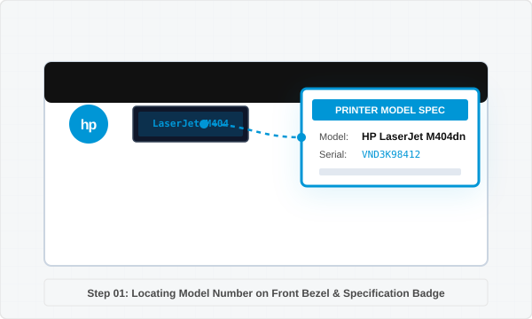
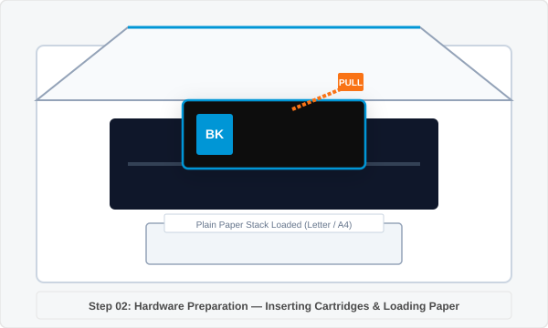
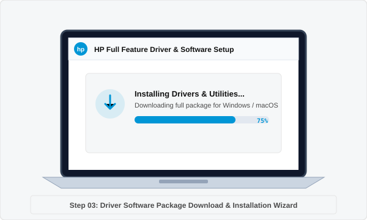
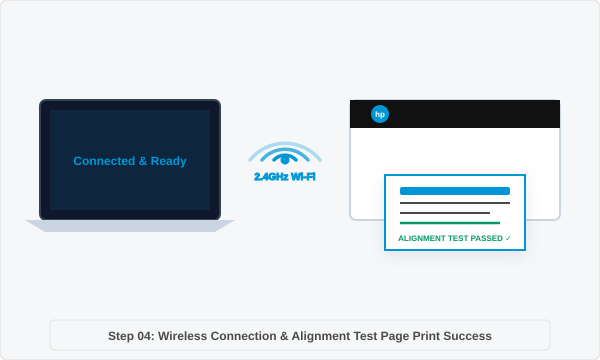

Set up your printer
and start printing today.
Welcome to the centralized printer setup and driver software portal. Access complete installation manuals, exact driver setup packages, wireless network connection protocols, hardware preparation checklists, and step-by-step diagnostic fix procedures for Windows 11, Windows 10, macOS, ChromeOS, iOS, and mobile device platforms.

Step-by-step printer setup guide
Follow this comprehensive 4-stage setup manual to unpack, configure, install drivers, and verify printing across all your devices.
Locate and identify your printer model
Accurate driver installation and hardware setup begin with identifying your exact printer model number. Printer model designations are specifically formatted to ensure full compatibility with operating system driver packages.
Where to find your model number:
- Front Panel & Display Console: Printed directly on the front bezel, near the power button, or on the LCD display panel.
- Cartridge Access Compartment: Open the front or top door where ink cartridges or toner units are seated. The serial number badge is located inside.
- Rear Specification Label: Located on the back or bottom frame of the printer alongside power ratings and MAC address badges.
- Network Configuration Report: Press and hold the Information button (i) or Wireless button to print a hardware status page detailing exact model name and IP address.


Unbox and prepare printer hardware
Proper hardware unpacking and physical preparation prevent paper jams, ink cartridge seating faults, and carriage movement obstructions during first startup.
Hardware preparation checklist:
- Remove Protective Tapes: Clear all bright orange shipping tape, protective plastic shields, and internal foam guards from the scanner glass and ink carriage path.
- Connect Power Cable: Connect the supplied power cord directly into a grounded AC wall outlet. Avoid ungrounded extension cords or overloaded surge strips during initial startup.
- Install Ink Cartridges or Toner: Power on the printer, open the ink access door, and insert ink cartridges into their color-coded slots until they snap firmly into position. Ensure orange protective cap strips are peeled off completely.
- Load Paper Tray: Pull out the paper input tray, slide the width and length paper alignment guides outward, insert plain letter or A4 paper, and adjust guides snugly against the paper stack without bending edges.
Download and install driver software
Installing the recommended driver software package equips your computer with print queue control, scanner utilities, ink level monitoring, and duplex printing features.
Driver installation types explained:
- Full Feature Driver & Software Package: Provides complete functionality including print drivers, scanner drivers (TWAIN/WIA), Optical Character Recognition (OCR) software, and status alerts. Recommended for all primary workstation computers.
- Basic Print Driver (INF / PCL): Lightweight print-only driver for enterprise networks, virtual desktop environments, or older operating system installations where advanced scanning software is not required.
- Universal Print Driver (UPD): Single driver solution designed for managing fleet printers across managed corporate network environments.
- Firmware Update Utility: System updates that refine wireless network handshaking, security protocols, and internal printer engine performance.


Establish connection and verify test print
Connect your printer to your preferred communication interface (Wireless Wi-Fi network, direct USB cable, or wired Ethernet LAN) and complete diagnostic test page alignment.
Connectivity options:
- Wi-Fi Wireless Setup (2.4GHz Band): Press the Wireless button on your printer control panel. Use WPS (Wi-Fi Protected Setup) button on your router or enter network credentials via setup software.
- Direct USB Connection: Connect a high-speed USB 2.0/3.0 A-to-B cable between the printer and computer. Do not connect USB cable until instructed by setup software installer wizard.
- Wired Ethernet Network (RJ45): Insert a standard CAT5e/CAT6 network cable from your router into the printer Ethernet port for instant IP address assignment via DHCP.
- Print Alignment Test Page: After connection completes, print an alignment sheet to calibrate color heads and verify print quality.
Having trouble printing? Follow the 8-step fix checklist.
Use this systematic diagnostic flow to resolve offline status, print spooler freezes, paper jams, wireless disconnection, and poor print quality issues.
Check power & electrical supply
Verify power cable is firmly seated into printer power port and plugged directly into a working AC wall outlet. Confirm power button LED is solid green/white without flickering.
Check display error codes
Inspect front panel LCD screen or LED warning indicators for error codes (e.g., E1, E2, E3, E9, Door Open, Cartridge Error). Refer to error code manual for resolution.
Check Wi-Fi & USB ports
Confirm computer and printer are connected to identical 2.4GHz Wi-Fi SSID network. If using USB cable, disconnect and re-insert into direct motherboard USB port.
Check ink or toner levels
Open access door to inspect cartridge seating. Ensure orange protective tape seal is completely removed and contacts are clean. Run software printhead cleaning cycle if ink is low.
Clear paper jams & tray feeds
Remove paper stack, inspect input tray rollers, and carefully pull out jammed paper from rear access door or duplex unit using both hands to avoid tearing paper.
Restart print spooler service
Power cycle printer and router. On Windows, press Win+R, type services.msc, right-click Print Spooler service, click Restart, and clear pending queued documents.
Update driver software & OS
Reinstall or update printer driver package to resolve port communication conflicts after operating system updates on Windows 11 or macOS Sonoma.
Print alignment diagnostic page
Open system Printers & Scanners menu, select your printer, click Print Test Page, and evaluate line sharpness and color registration grid output.
Operating system setup instructions
Detailed installation procedures for Windows, macOS, ChromeOS, iOS, and mobile platforms.
Windows 11 & Windows 10 Setup
- Download the recommended full feature installer package matching your model number.
- Right-click setup file and select Run as Administrator.
- Choose connection method (Wi-Fi Wireless or USB cable) when prompted by installer wizard.
- Open Settings > Bluetooth & devices > Printers & scanners and set printer as default.
macOS Sonoma & Ventura Setup
- Ensure Mac and printer are connected to the same Wi-Fi router network.
- Open System Settings > Printers & Scanners on your Mac.
- Click Add Printer, Scanner, or Fax button (+ icon).
- Select your printer from AirPrint list and click Add to complete setup.
ChromeOS, iOS & Mobile Setup
- Connect mobile device or Chromebook to printer Wi-Fi Direct SSID or router network.
- On iOS devices, tap Share > Print and select your AirPrint enabled printer.
- On smartphones and mobile tablets, enable Mopria Print Service in System Print settings.
- On Chromebooks, open Settings > Advanced > Print & scan to discover network printer.
Install drivers and printer software
Follow these instructions to download matching driver packages and configure software for your model.
Identify exact printer model number
Enter your printer model in the Identify tool to obtain verified driver links.
Download recommended driver package
Select executable setup package for Windows (.exe) or disk image installer for macOS (.dmg).
Execute installation wizard setup
Open downloaded file, accept license terms, and complete screen prompts for port selection.
Connect hardware & verify print test
Complete wireless pairing or USB cable plug-in, and print an alignment test page.
Frequently asked printer setup questions
Detailed technical answers to common printer installation, connectivity, and hardware configuration questions.
Setting up a wireless printer over Wi-Fi without a USB cable can be accomplished using WPS (Wi-Fi Protected Setup) or Software Auto-Connect. First, ensure your Wi-Fi router includes WPS capability. Press and hold the Wireless button on your printer panel for 3 seconds until the wireless status LED begins blinking. Within 2 minutes, press the WPS button on your wireless router. The printer will negotiate credentials and establish a connection. Once the wireless light stays solid blue, run the driver setup software on your computer, select "Wireless Network Connection", and your computer will automatically discover the printer on the local network.
A "Printer Offline" status on Windows 11 usually indicates a communication breakdown between the Windows Print Spooler and the printer's assigned IP address. To fix this:
- Power cycle both your printer and wireless router to refresh network DHCP leases.
- Open Settings > Bluetooth & devices > Printers & scanners, click your printer, and select Open print queue.
- In the print queue window, click the Printer menu item and ensure Use Printer Offline is unchecked.
- Press Win+R, type
services.msc, locate Print Spooler, right-click and choose Restart.
A Full Feature Driver & Software Package includes the primary print engine driver alongside advanced scanning utilities (TWAIN/WIA drivers), optical character recognition (OCR) tools, ink level monitor software, and network configuration diagnostic tools. A Basic Driver (such as an INF or PCL driver) contains only the core code required for Windows or macOS to send print jobs to the printer queue. Basic drivers are recommended for system administrators managing enterprise networks or low-bandwidth environments where full software applications are not required.
You can obtain your printer's IP address through several methods:
- Network Status Page: Press and hold the Information (i) or Wireless button on the printer control panel for 3 seconds to print a Wireless Network Test Report containing your IPv4 address (e.g., 192.168.1.150).
- Printer Display Screen: On touchscreen models, tap the Wireless or Settings icon to view active Wi-Fi connection details.
- Router Admin Console: Log into your Wi-Fi router management panel (usually 192.168.1.1 or 192.168.0.1) and check the DHCP Connected Devices client list.
Blank or faint print output is typically caused by clogged printhead nozzles, protective tape left on new ink cartridges, or incorrect print density settings. Ensure all orange protective plastic sealing tape has been removed completely from cartridge vents before installation. If cartridges are seated correctly, run a Printhead Cleaning Utility cycle through your printer software or control panel settings to clear dried ink residue from microscopic printhead nozzles.
To safely clear a paper jam: Turn off the printer power switch and disconnect the AC power cord. Open the rear access panel or duplexer unit. Grasp the stuck paper firmly with both hands and pull it out slowly and evenly in the direction of the paper path to avoid tearing the sheet or damaging internal feed rollers. Inspect the paper path with a flashlight to remove small paper scraps, close all access doors, reconnect power, and print a alignment test page.
Need additional help with your printer?
Access comprehensive setup manuals, diagnostic fix guides, and technical software setup resources.
Printer setup guides
Comprehensive hardware unboxing, cartridge seating, paper tray loading, and Wi-Fi network configuration instructions.
Diagnostic fix guide
Step-by-step diagnostic solutions for printer offline status, print spooler errors, paper jams, and print quality alignment.
Driver assistance & help
Identify your exact model number to download compatible software packages for Windows, macOS, and ChromeOS.